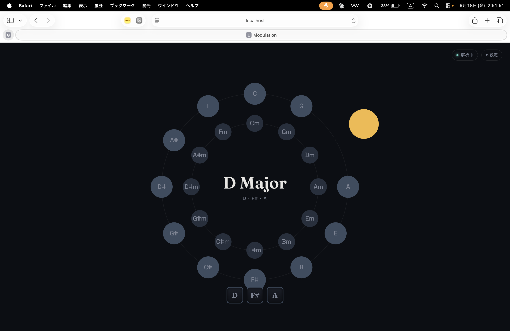
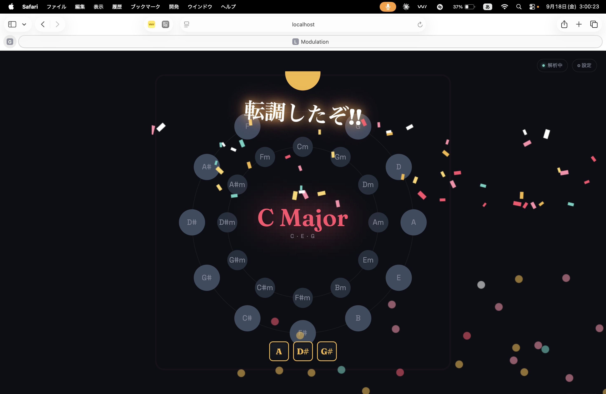

概要
音楽を聴いていて「あ、転調した」と感じる瞬間を、リアルタイムで検出して可視化するアプリを開発した。単なる分析ツールではなく、確信度に応じてパチンコ的な演出が発生する、エンタメ性を重視したツールとして仕上げている。
- 入力: MP3ファイル解析 / マイク・システム音声（BlackHole経由）のリアルタイム解析
- UI: 五度圏（Circle of Fifths）を軸にしたビジュアルと、転調検出時の演出（パーティクル・紙吹雪・LED枠点滅・スロットリール・絶叫テキスト）
- 技術構成: Python（librosa, FastAPI, WebSocket）+ HTML/CSS/JS
画面
五度圏をベースにした通常時のUIと、転調を検出した瞬間の演出。


技術的アプローチ
音声からクロマ特徴（12音名ごとのエネルギー分布）を抽出し、Krumhansl-Schmucklerのキー相関プロファイルと照合して24キー（12メジャー+12マイナー）を推定する。この基本手法自体は音楽情報検索（MIR）の分野で確立されたものだが、「キーが変わった瞬間を検出する」という部分には多くの試行錯誤が必要だった。
開発の流れ
Phase 0: MVP — ファイル解析ツール
まずはMP3ファイルを対象に、スライディングウィンドウでキー推定を行い、キーが安定して切り替わった区間を転調として検出するシンプルなCLIツールを作った。合成音源（C→G転調）でのテストから開発をスタートし、まず「動く」ことを確認。
Phase 1: リアルタイム化とエンタメ演出
次に、マイクやシステム音声からリアルタイムに検出できるよう拡張。macOSでは他アプリの出力音声を直接録音できないため、BlackHoleという仮想オーディオデバイスを使い、Multi-Output Deviceでスピーカー出力とBlackHoleの両方に音を流す構成にした。
このタイミングで「djayなどのDJアプリのアドオンにできないか」という検討も行った。調査の結果、djayには公式のプラグインAPIが存在しないことが判明。Audio Unitプラグインとしてホストする案も検討したが、開発コスト（C++移植、macOS専用規格）とのバランスから、汎用性の高いループバック録音方式を採用した。
Tkinterで最初のGUIを組み、転調検出時にパーティクルやフラッシュが発生する演出を実装。「転調したぁぁあ！！🤩」的な絶叫テキストも、最終的には絵文字を排して「転調ッ！！」のような言葉の勢いだけで表現する方向に調整した。バカさは出すが安っぽさは出さない、というバランスを意識した。
Phase 2: Webアプリ化
Tkinterの見た目の限界を感じ、FastAPI + WebSocketのバックエンドと、ブラウザで動くフロントエンドに移行。デザインは「音楽理論のモチーフである五度圏を主役に据える」という方針で、AIツールが生成しがちな「テンプレート感のある配色」を避けるべく、楽譜の紙を思わせる藍黒ベース×琥珀色のアクセントにまとめた。
途中でUIの目的意識がぶれていることに気づき、「内部的には音楽分析ソフトだが、目的は転調好きのための視覚的娯楽である」という原則を立て直した。分析的な数値表示（確信度、evidence等）はメイン画面から排除し、/configという別ページに検証用UIとして隔離。メイン画面は五度圏と演出だけのシンプルな構成にした。
Phase 3: 検出アルゴリズムの高度化
単純な「キーが変わったら転調」というロジックには、セカンダリードミナントや借用和音を誤検出する弱点があった。これを解消するため、以下の4段階のパイプラインに再設計した。
Key estimation → Key timeline → Change-point detection → Modulation classification
- マルチスケール解析: 短期（2秒）・中期（8秒）・長期（20秒）の3つの時間スケールで並行してキー推定し、長期スケールでも変化が確認されたものだけを「本当の転調」候補とする
- Change-point detection: rupturesライブラリのPELTアルゴリズムを使い、キー推定を経由せず生のクロマの分布変化から和声的な変化点を直接検出
- 新Keyの定着評価（Phase2）: 新しいキーの継続時間・トニック音の優勢度・元のキーへの即時回帰の有無を評価し、複合スコアと根拠（evidence）を出力するように拡張。V→I進行の検出も試みたが、クロマの統計だけでは精度に限界があるため「弱い根拠」として扱っている
テストケースとして、明確な転調と一時的な借用和音を含む合成音源を用意し、旧アルゴリズムが一時的な借用和音を誤って転調と報告してしまうのに対し、新アルゴリズムでは正しく除外できることを確認した。
Phase 4: リアルタイム版の精度改善
実際の曲でテストする中で、「反応速度の設定によって全然違うキーが出る」「同じ曲の同じ箇所でもキー判定がブレる」という問題が見つかった。原因を切り分けていくと:
- 単純にウィンドウ全体を平均してキー推定していたため、瞬間的な音に結果が引っ張られやすかった → サブウィンドウごとに投票し多数決を取る方式に変更
- 平行調や近親調はクロマパターンが似ているため、1位と2位の相関差（margin）が僅差になりやすく、そこでブレが生じていた → margin（確信度の差）が小さい「自信のない投票」を多数決から除外するよう改善
- 転調確定の判定が「近い調同士で細かく揺れる区間」にたまたま反応してしまう誤検出があった → 候補が2回連続で出るまで確定を待つヒステリシスを導入
得られた知見
- クロマベースのキー推定は、五度圏で遠いキーへの転調（定番の半音上げラスサビ転調など）には強いが、平行調や近親調への転調は原理的に区別しづらい
- 「サビ→転調サビ」のような構造化された転調は検出しやすい一方、独立した単発のサビの転調は、周囲のセクションに埋もれて長期スケールの判定に乗りにくく、検出が難しくなりうる
- 音楽的な「複雑さ」と、アルゴリズムの「不安定さ」は見分けにくい。実際にログを見ながら、どちらの原因かを1つずつ切り分けていく作業が開発の大半を占めた
今後の展望
- リアルタイム版にもPhase1/2のマルチスケール解析を統合し、2つの独立したロジックを一本化する
- サビの典型的な長さに合わせたスケール設定の調整
- V→I進行など和声的な根拠の精度向上